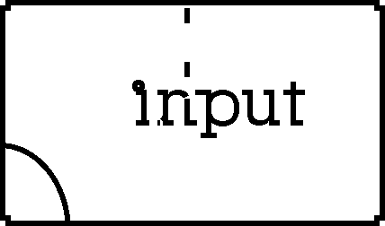

Project 1
Input and Output : Due 10/19

Create something(s) that explore relationships between INPUT and OUTPUT.
We have explored digital and analog inputs like...
- push buttons
- mechanical lever switch
- conductive objects as switch
- potentiometers
- conductive materials(conductive foam and rubber) as variable resistors
- photoresistors (LDR)
- piezo element as vibration sensor
And we have explored digital and analog outputs like...
- Blinking LEDs
- Darlington transistor with motor
- RGB LEDs
- tone()
- servo motor
Pay particular attention to physical property (affordances) of the imput device and how it affect the experience you are creating. Observe the variouse ways to output that can give you nuances of behaviour. Output can affect the environment that can have an effect on your input (feedback). Make various experiments with inputs and outputs of your choice to have a better understanding of your material.
".... the attuned craftsman asks, "What can this medium do?" as much as "What do I wish to do with this medium?"
From Abstracting Craft: The Practiced Digital Hand by Malcolm McCullough

Observe how form, materials and context of input and output can effect how people see, read, and interact with your work.
For example, embedding a sensor into an object that is shaped like handle might suggest holding. If object reacts differently when you interact with different parts, it can seem like it was a "preference."
- This project can be explored without any electronics as long as your work explores the idea of INPUT/OUTPUT and demonstrate compeling relationships.
- This project also does not have to be 'interactive' as long as the concepts of INPUT and OUTPUT exist in the piece.
- No screen based project for this one.
- You are welcome and encouraged to collaborate. Your work must reflect elevation in craft.
Steps:
- Experiment with various input and output materials
- Make a sketch/drawings
- Prototyping: mock up your project to seek some more findings and learn how they work
- Peer review
- make a finished project
Documentation : Due 10/26
- 2 photos or 1 short video of your work
- One paragraph description of your piece
- arduino sketch .ino file (if you use arduino)
- exported .png file form fritzing or drawing of your schimatic
Upload documents to google doc in a folder named "Project 1"